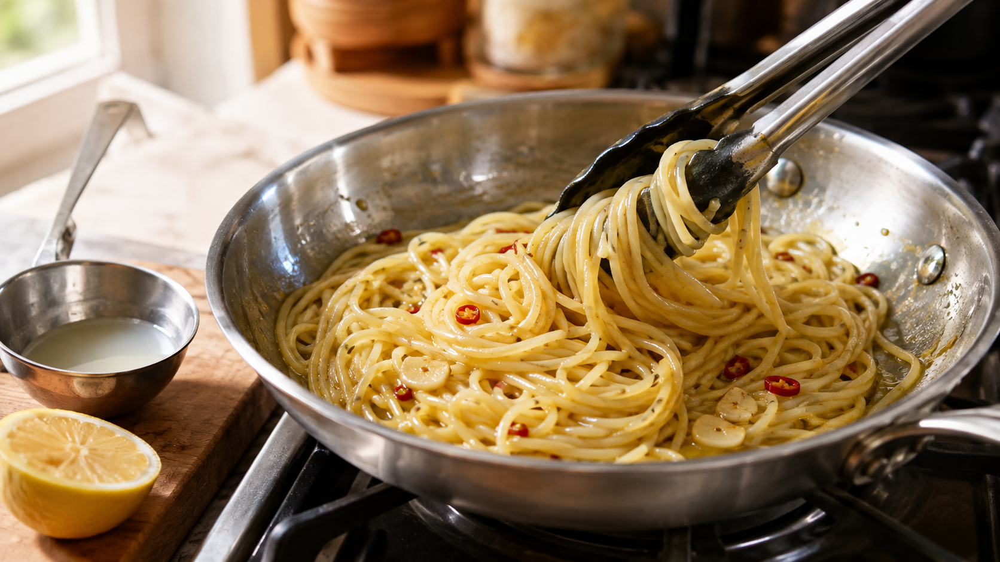

パスタのゆで汁は、油をつなぐ。「白い水」でソースがまとまる理由
ペペロンチーノを皿へ盛ったら、麺は乾き、底には油だけが残っていた。
材料は合っている。味も悪くない。それでも店のような、麺を薄く包むソースにならない。
この差を埋めるのが、捨てる直前のパスタのゆで汁だ。
ただし、ゆで汁を入れるだけでは水っぽくなる。大事なのは、少しずつ加えながら、麺と油を動かすことにある。
今日の結論
オイル系パスタのソースを麺へまとわせたいなら、パスタ100gに対して、ゆで汁をまず30mL使う。
麺をフライパンへ移し、中火で30〜60秒ほどよく混ぜる。乾いて見えたら、ゆで汁を10mLずつ足す。
ゆで汁に溶け出したでんぷんが液体へ少し厚みをつけ、混ぜる動きが油を細かな粒にする。この二つが重なると、油と水がすぐに分かれにくくなり、麺の表面へ薄く広がる。
白く濁った水には、麺から出たでんぷんがある
乾燥パスタの中では、でんぷんの粒が小麦のたんぱく質の網に包まれている。
熱い水が入ると、外側のでんぷんは水を吸ってふくらみ、一部がほどけてゆで湯へ出てくる。パスタを加熱したときの構造変化を調べた研究94552-0)では、麺の外側ででんぷん粒が崩れ、アミロースが流れ出す様子が確認されている。
つまり、ゆで汁はただの塩水ではない。ごく薄い「でんぷんのとろみ水」になっている。
ここでいうとろみは、片栗粉のあんのような強さではない。スプーンではほとんど分からなくても、油の粒が動く速さや、麺の表面に液体が残る時間を変える程度の厚みだ。
油を細かな粒にすると、ソースは一つに見える
油と水は、そのまま置けば分かれる。
ところが、フライパンを揺すったり、トングで麺を混ぜたりすると、油は小さな粒になって水の中へ散る。油の細かな粒が水の中に散った状態を、乳化という。
ドレッシングの瓶を振ると、一時的に全体が白っぽくなるのと同じだ。ただし、パスタでは麺そのものが泡立て器のように動き、表面のでんぷんを含む液体と油を何度も混ぜ直す。
でんぷんには二つの働きが考えられる。ひとつは水側を少し動きにくくして、油の粒同士が再び集まるまでの時間を延ばすこと。もうひとつは、条件によって油の粒の表面を覆い、分離しにくくすることだ。
加熱して水を抱えたでんぷんと油を調べた研究では、でんぷんを含む液体が油と水の境目の性質を変え、油の粒を覆う様子が確認された。
ただし、すべてのでんぷんが同じ強さで油を安定させるわけではない。別の研究では、加熱した小麦でんぷんだけでは、試験した条件の油を長く安定させられなかった。
だから、ゆで汁を「万能の乳化剤」と呼ぶのは言いすぎだ。家庭のパスタでは、弱いとろみ、麺を動かす力、もともとソースにある細かな固形分が一緒に働き、食べるまでの短い時間、ソースをまとめると考えるのが近い。
研究で分かったのは、濃さが効くということ
パスタを続けてゆでた水を調べた研究では、麺から出た固形分が水へたまるほど、ゆで汁の粘りが増えた。この結果から、同じ一杯のゆで汁でも、でんぷんの濃さによって働きが変わると分かる。
また、水を少なくしてパスタをゆでた研究では、一般的な大量の湯を使わなくても、麺の吸水や硬さ、でんぷんの流出量は大きく変わらなかった。少ない湯でも調理できるという結果は、家庭では鍋を必要以上に大きくしなくてもよいことを示している。
流れ出る量が近いまま水だけが少なければ、ゆで汁は相対的に濃くなる。これは研究結果から導ける料理上の考察で、鍋の形やパスタの種類によって濃さは変わる。
チーズソースを扱った2025年の研究でも、でんぷんが少なすぎるとソースが分かれやすく、濃くすると塊が減ることが確認された。オイルだけのソースと同じ仕組みではないが、「ゆで汁なら何でも同じ」ではなく、中にあるでんぷんの濃さが大切という点は共通している。
今日の一皿：ゆで汁でまとめるレモンペペロンチーノ
材料（1人分）
- スパゲッティ 100g
- 水 1L
- 塩 8g
- オリーブ油 20g
- にんにく 1片
- 赤唐辛子 1/2本
- レモン果汁 小さじ1
- 黒こしょう 少々
- パスタのゆで汁 30〜60mL
作り方
- 深めの鍋へ水1Lと塩8gを入れて沸かし、スパゲッティを表示時間より1分短くゆでる。途中で数回ほぐす。
- にんにくを薄切りにする。フライパンへオリーブ油15g、にんにく、赤唐辛子を入れ、弱火で香りを移す。にんにくが薄いきつね色になったら火を止める。
- ゆで上がる直前の白く濁ったゆで汁を60mLほど取る。熱い油へ一気に水を入れるとはねるため、フライパンを火から外して20秒ほど置き、ゆで汁30mLを鍋肌から少しずつ加える。
- スパゲッティをフライパンへ移し、中火に戻す。トングで持ち上げて返しながら30〜60秒混ぜ、油の筋が見えにくくなり、液体が麺へ薄く残るまで動かす。
- 乾いてほぐれにくければ、ゆで汁を10mLずつ足す。皿の底に水がたまるなら、足さずにもう少し混ぜる。
- 火を止め、残りのオリーブ油5g、レモン果汁、黒こしょうを加えて全体を返す。ソースがつやのある薄い膜になったら盛り付ける。
目標は、白く濁った大量のソースではない。麺を持ち上げたとき、油が滴らず、一本ずつにつやが残る状態だ。
この考え方を、スープや煮物にも広げる
ゆで汁から覚えたいのは、「でんぷんを入れれば何でも乳化する」ではなく、水の動きを少し遅くすると、油や具材が全体へ散りやすくなるという考え方だ。
カレーやポタージュが翌日にまとまりやすいのも、煮崩れたでんぷんや野菜の細かな粒が液体へ厚みを作るからだ。逆に、油が浮いたスープへ粉をそのまま入れると塊になる。先に少量の液体でのばし、混ぜながら全体へ戻すと、同じ原理を使いやすい。
買い物では「とろみが強いほど良い」と決めない。さらりと仕上げたい料理なら、でんぷんの少ない麺や多めの湯が向く。ソースを麺へ密着させたいなら、白く濁ったゆで汁を少量残す。見るべきなのは、料理名ではなく、最後に液体をどこまで麺へ残したいかだ。
今日のまとめ
パスタのゆで汁には、麺から流れ出たでんぷんがある。
その弱いとろみが油の粒を動きにくくし、麺を混ぜる動きが油を細かく散らす。だから、ソースが麺へ薄くまとまりやすくなる。
まずはパスタ100gに、ゆで汁30mLから。入れて終わりにせず、フライパンの中で30〜60秒、麺とソースを一緒に動かしてみよう。
参考文献
- Cunin C, Handschin S, Walther P, Escher F. Structural changes of starch during cooking of durum wheat pasta. LWT - Food Science and Technology. 1995;28(3):323-328. https://doi.org/10.1016/S0023-6438(95)94552-0
- Diamante G, Peressini D, Simonato M, Anese M. Effect of continuous cooking on cooking water properties and pasta quality. Journal of the Science of Food and Agriculture. 2019;99(6):3017-3023. https://doi.org/10.1002/jsfa.9515
- Cimini A, Cibelli M, Moresi M. Reducing the cooking water-to-dried pasta ratio and environmental impact of pasta cooking. Journal of the Science of Food and Agriculture. 2019;99(3):1258-1266. https://doi.org/10.1002/jsfa.9299
- Singh A, Umeda T, Kobayashi I. Formulation and Characterization of Soybean Oil-in-Water Emulsions Stabilized Using Gelatinized Starch Dispersions from Plant Sources. Molecules. 2024;29(9):1923. https://doi.org/10.3390/molecules29091923
- Kasprzak MM, Macnaughtan W, Harding S, Wilde P, Wolf B. Stabilisation of oil-in-water emulsions with non-chemical modified gelatinised starch. Food Hydrocolloids. 2018;81:409-418. https://doi.org/10.1016/j.foodhyd.2018.03.002
- Bartolucci G, et al. Phase behavior of Cacio e Pepe sauce. Physics of Fluids. 2025;37:044122. https://doi.org/10.1063/5.0255841